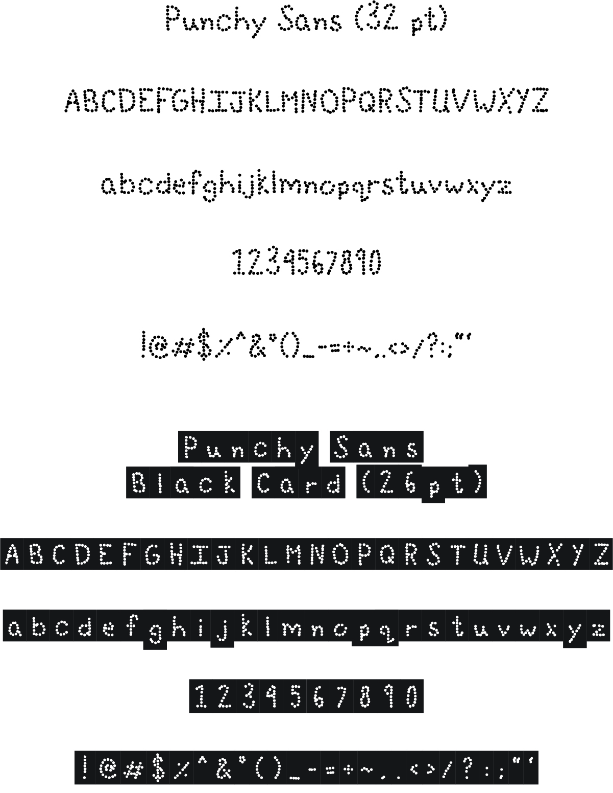
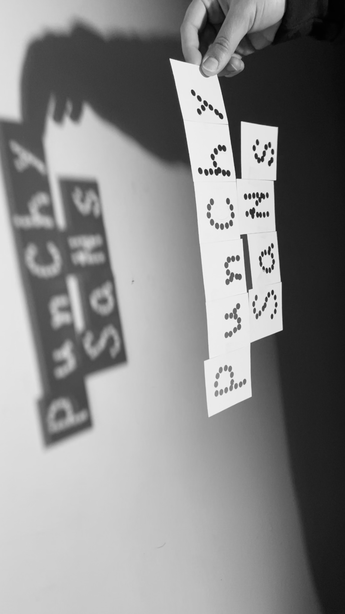
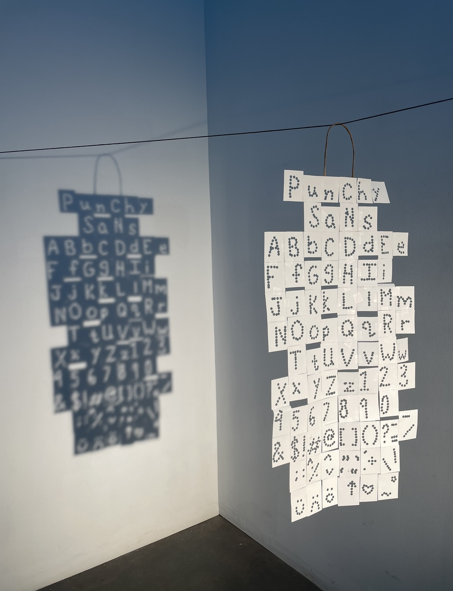

Type Design
Ecography is a method of engaging with language in and of our environment. I explored what it
means to shorten the distance between our screens and our local environment by observing,
gathering, exploring, and learning basic type design as a framework to think about where we are
and how we work more critically. I found parallels of circles with hole punches, then developed
letterforms to embody those ideas.
Typeface: Punchy Sans



